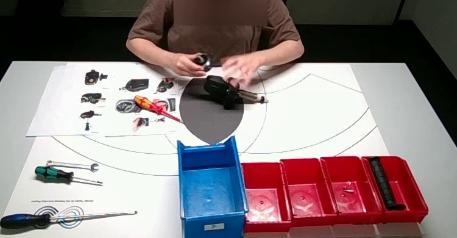
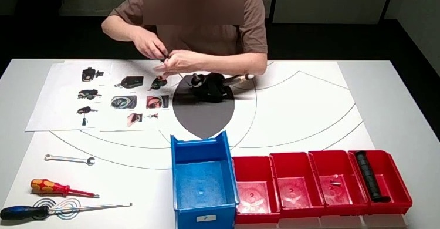

辨认负责人和操作员，处理草稿、否决与追加要求，将最后生效的口径写成policy.json。
OMNIALE · 企业协作与数字业务 / 装配记录交接
听交接、看装配，建立可回放的动作台账
先听懂负责人最后确认的归档要求，再对照同一次角磨机装配的正面与俯视录像，记录实际发生的动作、对象、手别和时间，交付可搜索、筛选和逐条回看的网页。
真实工业装配 · 双视角录像 2分53.8秒后期合成交接 3分35.3秒v4.1 · 三模型同材料测试一、任务定义
负责人要把装配录像整理成可核查的培训记录。交接录音含操作员的初稿、建议和负责人的更正；Agent需要判断哪些要求最终生效，并把要求落实到实际画面。文字委托提供编码词汇与交付格式，最终归档范围从录音获取。
沿时间轴核查取件、转交、对位与装配；结合两视角确认执行手、对象和区间，保留未知项。
让JSON与报告一致，每条动作能跳回原片，提供筛选、搜索和口头要求回听入口。
完整口头交接
两位角色首次发言时自报身份；这是后期合成的委托要求，并非现场原声。下载完整WAV。
需要完成的工作
恢复最终口头口径，逐段核查取持、转交、对位、贴合和旋拧等可见动作，记录对象、执行手别、起止时间及证据。遮挡或无法确认的字段可写未知，不推断内部接合结果或产品安全。
需要交付的文件
actions.json动作台账、policy.json最终口径、report.html回放网页，以及说明方法、未知项和来源的README.md。
实验设置与运行边界
| 项目 | 设置 |
|---|---|
| 输入 | 同一次装配的正面与俯视完整录像、中文交接录音、通用本地ASR工具、来源与许可；不含逐字稿、动作索引或评分答案。 |
| 音画处理 | 模型自行转写、抽帧、裁剪、回看片段并安装所需工具。两片均为1280×720、30fps；录音215.3秒，录像173.8秒，录音讲述的是归档规则，不是逐秒现场解说。 |
| 运行 | 真实Windows Codex CLI，独立目录与会话，串行求解。Sol使用xhigh，DeepSeek和Kimi使用max；每模型一份有效完成结果。 |
| 工具与网络 | FFmpeg／ffprobe、Python、OpenCV、faster-whisper及Playwright等；允许联网和安装依赖，没有固定总时长、抽帧数或工具次数截止。 |
| 材料边界 | 只使用本题材料，不读取其他实验、作者参考、已发布答案或其他用户会话；运行前验证了参考和凭据拒读、题目可读写与实际联网。 |
| 交付 | 事件JSON与最终口径JSON、完整可打开报告、方法与来源说明；最终记录未知项，不能把内部质量或安全推断当成已观察事实。 |
验收要求
- 口径能追溯到录音最后生效的要求；未被采纳的建议不能覆盖负责人决定。
- 台账包含可定位的起止时间、执行手别、动作、对象与证据；连续动作的合并和独立动作的拆分要保持一致。
- 报告默认展示全部记录，支持手、动作、对象及文本筛选；可逐条回放两视角并回听交接。
- 网页内嵌数据与JSON一致，原片路径可用；README交代方法、限制、来源许可与可靠打开方式。
任务原文与完整输入下载
# 角磨机装配动作证据交接
请根据培训资料负责人的口头交接，检查同一次角磨机装配的两段录像，建立可逐条回放的动作台账。交接有草稿、建议和后续更正，需要先判断最终生效的要求，再按要求归档实际可见动作。无需判断产品是否合格，不从遮挡推断内部接合、扭矩或运行安全。
## 材料
- `input/front.mp4`：完整正面录像，1280×720、30fps，约174秒。
- `input/top.mp4`：同次操作的完整俯视录像，名义时间同步，供互相核查。
- `input/handover.wav`：两位角色的后期合成中文交接，属于拟制委托，不是现场录音。角色在录音中自报身份；负责人有最终权限，操作员建议须明确获采纳才生效。
- `local_asr.py`：通用本地转写工具，不含逐字稿、事件索引或答案。
最终记录哪些时间、哪些动作、哪些手，是否记录扶持，以及同时动作如何列行、使用哪个主时钟，均从录音恢复。本说明不代替交接内容。两段录像是同一次物理过程，不是两遍装配。输入没有镜像；描述手别时使用操作者的解剖左右。
允许联网、安装工具、脚本、逐帧查看和本地模型，保留正常网络与代理。可使用FFmpeg、OpenCV和本地语音模型；已有Whisper缓存可复用。不得检索原数据集标注、现成答案，或读取其他运行、作者参考文件与已发布案例答案。只操作本题工作目录内对应的材料和网页。
## 数据编码
以下是可用编码词汇，不表示这些动作都应归档；最终范围以交接为准。
| action | 含义 |
|---|---|
| pick_up | 从料盒或桌面取起对象 |
| put_down | 放到桌面、放回料盒或归还工具 |
| transfer | 手间转交对象 |
| flip | 明显翻面、改变朝向 |
| adjust | 对位、调整、摆正或找孔 |
| fit | 插入、贴合、压入、就位或装到一起 |
| fasten | 手指起扣、手拧或工具旋拧 |
| hold | 持住、扶住或稳定对象 |
`object`使用上位类别：`body`黑色机体（含已插轴的机体）、`shaft`长金属轴／转子、`gear`齿轮状圆件、`adapter_plate`平板／环状适配件、`bearing_plate`较大圆盘总成、`small_attachment`细小紧固件／弹簧／拨件、`handle`黑色长柄、`screwdriver`柄式螺丝刀、`wrench`开口／组合扳手。不要求猜遮挡中的规格或工具尖端。
每条记录应有可回查的起止时间。区分换动作、换对象或明显结束后重新开始；同一手、同类动作、同一对象的连续操作不要按手抖或工具往复切碎，短于0.8秒且未转为其他归档动作的中断可合并。跨交接口径边界时如何处理，从录音确定。未知字段写`null`并说明可见事实，不编造被遮挡的结果。
## 交付
写入`output/`，提交：
1. `actions.json`：顶层为`{"events":[]}`。每条事件包含`id`、`hand`、`start_s`、`end_s`、`action`、`object`、`evidence`数组和`note`。`evidence`每项包含`file`、`start_s`、`end_s`。`hand`可表示`left`、`right`或`both`；最终应采用哪些手别、如何表示同时动作，以录音为准。ID自行安排。
2. `policy.json`：恢复最终口头口径。`first`与`second`分别包含`start_s`、`end_s`、`hands`数组和`actions`数组；另有`record_holds`布尔、`clock`字符串、`bilateral_as_two_tracks`布尔。填写录音要求的值，不根据格式字段猜答案。
3. `report.html`：默认展示全部归档记录，可按手、动作、对象和文本筛选；每条能回放所选主时钟对应的片段，并能查看另一视角。提供交接音频回听入口；网页与JSON内容一致。可直接使用原片时间跳转，无需导出所有短片。
4. `README.md`：方法、主要发现、未知项、来源许可及可靠打开方法。
没有固定运行时长截止。完成后说明交付位置和实际验证情况；有未知项仍应交付其余可确认结果。
完整冻结输入包（不含作者参考或评分文件）：分片1（80.0 MiB） · 分片2（48.5 MiB）。将全部分片、校验清单与PowerShell合并脚本保存到同一目录后运行脚本；ZIP SHA256：7d2b1e55ebd466020ac5aee9579c75b0ffe16845a0f3fd6e4c66f4c2c24e2f97。
二、运行结果
| 模型 | 实际强度 | 接口 | 真实耗时 | 脚本总分 /100 | 状态 |
|---|---|---|---|---|---|
| gpt-6.1-sol | xhigh | nju | 46分22.2秒 | 66.95 | exit0 · 完成 |
| kimi-k3.1-pro | max | dashscope | 124分53.4秒 | 61.44 | exit0 · 完成 |
| deepseek-v4.1-flash-1017 | max | dashscope | 78分14.3秒 | 56.06 | exit0 · 完成 |
三模型使用相同冻结v4.1材料，各独立求解一次、串行运行、允许联网，无固定时长截止。Sol沿用xhigh，DeepSeek与Kimi使用max；不将耗时写成严格等强度速度对照。模型API直连，素材／依赖下载保留正常代理。
分项成绩与固定评分口径
| 模型 | 动作/35 | 对象/20 | 手别/15 | 定位/5 | 音频口径/10 | 网页/10 | 说明/5 |
|---|---|---|---|---|---|---|---|
| gpt-6.1-sol | 17.948 | 12.232 | 9.492 | 3.278 | 10.000 | 9 | 5 |
| kimi-k3.1-pro | 18.229 | 8.027 | 9.518 | 3.662 | 10.000 | 7 | 5 |
| deepseek-v4.1-flash-1017 | 10.601 | 11.003 | 7.037 | 3.417 | 10.000 | 9 | 5 |
前85分采用原冻结字段评分脚本：动作、对象、手别独立按类别宏平均F1计算，定位另计时间匹配，音频按字段比较。网页与说明15分由同一套提前冻结的浏览器和文本脚本检查；不进行作者逐项语义复核、clock归一化或事后加分。总分为确切脚本结果，不展示区间。
本轮15分交付检查已自动化，与旧v4人工交付分的实现不同。三模型在新版本内统一比较；旧v4的60.32中断产物结果保留历史，不混入本表。
三模型都恢复了哪些口头要求？
这是运行后的结果解读，以下文字表格不在模型测试输入包内。可点击时间回听原交接。
| 录音中的最后要求 | 三模型提交 | 原交接 |
|---|---|---|
| 前段0–83秒，双手记录六类动作；不记放下、扶持 | 全部一致 | |
| 83–173.8秒新增放下／归还；跨界事件按开始时处理 | 全部一致 | |
| 同一次双手主动操作分左右轨；手指旋拧也要记录 | 全部一致 | |
| 不采纳“省略所有取起”的最后建议 | 全部保留取起 | |
| 主时钟front，clock字段小写、不带扩展名 | 全部写front |
音频相关字段全部匹配参考，三者均得10/10。这只能说明本轮口径恢复成功，不能证明每条视觉记录都满足这些口径。
七类动作分别在哪里失分？
| 动作类别 | 6.1 Sol | Kimi K3.1 Pro | DeepSeek V4.1 Flash |
|---|---|---|---|
| 取起 | 82.9% 匹配17／提交23／参考18 | 89.5% 匹配17／提交20／参考18 | 81.2% 匹配13／提交14／参考18 |
| 转交 | 57.1% 匹配6／提交12／参考9 | 53.3% 匹配4／提交6／参考9 | 20.0% 匹配1／提交1／参考9 |
| 翻面 | 37.5% 匹配3／提交12／参考4 | 66.7% 匹配3／提交5／参考4 | 16.7% 匹配1／提交8／参考4 |
| 对位调整 | 10.3% 匹配2／提交35／参考4 | 21.1% 匹配2／提交15／参考4 | 16.7% 匹配1／提交8／参考4 |
| 插入／贴合 | 72.7% 匹配12／提交18／参考15 | 45.2% 匹配7／提交16／参考15 | 18.2% 匹配2／提交7／参考15 |
| 旋拧 | 76.2% 匹配8／提交12／参考9 | 66.7% 匹配7／提交12／参考9 | 59.3% 匹配8／提交18／参考9 |
| 放下／归还 | 22.2% 匹配1／提交7／参考2 | 22.2% 匹配1／提交7／参考2 | 0.0% 匹配0／提交3／参考2 |
数字直接取原脚本输出。各类独立匹配后计算F1；提交数包含该类计分候选。一个候选在动作、对象和手别三个字段中分别计分，不能把某一列的匹配数当成“整条全对”的条数。
直接查看模型交付的网页
选择模型即可查看它实际制作的报告。页面布局、记录、备注和交互脚本来自原交付；发布预览只适配媒体与来源链接，不回填模型得分。
此处展示的是模型自己的报告。统一阅读器便于在同一界面比较原始JSON；完整ZIP保留原文件和打开说明。发布适配与哈希记录。
下载三个模型的原始交付、动作JSON与说明
gpt-6.1-sol
119条原始观察。动作台账阅读器 · 原始完整交付ZIP · 原始HTML · 动作JSON · 口径JSON · 说明。
阅读器按原JSON生成，只适配播放入口；不修改答案，不回填模型交付分。原HTML连同所需文件保留在完整ZIP，须按原说明在本地打开。
deepseek-v4.1-flash-1017
61条原始观察。动作台账阅读器 · 原始完整交付ZIP · 原始HTML · 动作JSON · 口径JSON · 说明。
阅读器按原JSON生成，只适配播放入口；不修改答案，不回填模型交付分。原HTML连同所需文件保留在完整ZIP，须按原说明在本地打开。
kimi-k3.1-pro
81条原始观察。动作台账阅读器 · 原始完整交付ZIP · 原始HTML · 动作JSON · 口径JSON · 说明。
阅读器按原JSON生成，只适配播放入口；不修改答案，不回填模型交付分。原HTML连同所需文件保留在完整ZIP，须按原说明在本地打开。
三、运行轨迹
三者都完成转写、抽帧和真实浏览器自测，投入方式和台账粒度不同：Sol输出最多，DeepSeek较少，Kimi多轮回查后收敛。下面先概括操作过程，完整轨迹保留中途失败及恢复。
6.1 Sol
两次转写确认口径，细分119条动作，再集中验证双视角回放。
政策恢复完整；台账细分最多，原脚本在对位、放下和翻面的精确率上扣分。
46分钟 · 63项可见记录 · 10个关键节点
Kimi K3.1 Pro
多轮加密抽帧、修正裁剪遗漏，收敛到81条，再排查HTTP回放逻辑。
政策正确；对象命名与原参考差异突出。运行投入最长，自动总分仍低于Sol。
124分钟 · 333项可见记录 · 11个关键节点
DeepSeek V4.1 Flash
逐段裁图形成61条记录，修复Windows写文件问题后补齐真实浏览器验证。
政策正确，但台账中的转交、贴合与参考覆盖有较大差距；网页自动探针未命中俯视切换。
78分钟 · 181项可见记录 · 10个关键节点
四、失败分析
共同点：口头政策全部恢复，主要失分发生在视觉台账与参考的匹配。
三模型音频均10/10。以下直接引用原始JSON、固定脚本计数和可见操作，解释分数怎样形成；不重新判定逐条动作，不进行语义、分段或时钟修正。
1. 119、81、61条记录，对同一参考产生不同的精确率与覆盖
Sol把取件、对位、贴合及再次操作分得更细，提交119条；Kimi81条；DeepSeek61条，排除原设区间后计分59条。原脚本参考计分61条，一次参考最多匹配一条候选。记录多可能覆盖更广，也可能因为边界和拆分方式增加无法匹配的候选；记录少则可能遗漏独立动作。
| 模型 | 计分候选 | 仅时间匹配 | 参考时间召回 | 定位F1 |
|---|---|---|---|---|
| 6.1 Sol | 119 | 59 / 61 | 96.7% | 65.6% |
| Kimi K3.1 Pro | 81 | 52 / 61 | 85.2% | 73.2% |
| DeepSeek V4.1 Flash | 59 | 41 / 61 | 67.2% | 68.3% |
例如Sol的35条对位仅匹配参考中的2条，类别F1为10.3%；DeepSeek只提交1条转交，对照9条参考仅匹配1条。这里是原参考口径下的失分，不能把所有未匹配记录直接称为幻觉。
2. 同一段圆件装配，三模型给出了不同对象与手轨
在84–88秒附近，Sol写作bearing_plate，Kimi写作gear；DeepSeek同样写bearing_plate，但把后续对位／贴合记在左手。下面原样展示各自交付，供对照同一片段。评分参考在这段使用圆盘总成类别和对应手轨；分歧会影响对象与手别分。

6.1 Sol的原始记录
| ID | 区间／手别 | 原标签 | 模型原备注 |
|---|---|---|---|
| E059 | 83.80–85.40秒 左手 | pick_upbearing_plate | 左手从中间红盒取起较大的圆盘总成并移向机体。 打开这条记录 → |
| E060 | 85.40–85.90秒 左手 | transferbearing_plate | 左手将圆盘总成递给右手，随后改为操作机体。 打开这条记录 → |
| E061 | 85.40–85.90秒 右手 | transferbearing_plate | 右手接过圆盘总成；接收动作与左手递出分列。 打开这条记录 → |
| E064 | 86.80–88.10秒 右手 | fitbearing_plate | 右手把圆盘总成向下贴入机体开口并按压边缘；只确认可见贴合。 打开这条记录 → |
Kimi K3.1 Pro的原始记录
| ID | 区间／手别 | 原标签 | 模型原备注 |
|---|---|---|---|
| E038 | 84.00–84.80秒 左手 | pick_upgear | 左手从第二红盒取齿轮状圆件。 打开这条记录 → |
| E041 | 85.75–86.00秒 左手 | transfergear | 左手将圆件交给右手；与右手轨为同一次交接。 打开这条记录 → |
| E042 | 85.75–86.00秒 右手 | transfergear | 右手从左手接过圆件；不是第二次装配。 打开这条记录 → |
| E045 | 86.55–88.00秒 右手 | fitgear | 右手将圆件贴合到机体前侧；左手稳定机体不另记。 打开这条记录 → |
DeepSeek V4.1 Flash的原始记录
| ID | 区间／手别 | 原标签 | 模型原备注 |
|---|---|---|---|
| e036 | 84.15–85.45秒 左手 | pick_upbearing_plate | 左手从红色2号料盒取出较大圆盘总成；此后该盒为空。 打开这条记录 → |
| e037 | 85.45–86.40秒 左手 | adjustbearing_plate | 左手把圆盘总成对到机体左端。 打开这条记录 → |
| e038 | 86.40–87.25秒 左手 | fitbearing_plate | 左手把圆盘总成贴合／压入机体。 打开这条记录 → |
Kimi在轨迹中多次回查对象类别，并在269→273号记录确认85–86秒转交需要左右分轨；最终对象仍沿用gear。本页保留其原标签和8.027/20对象分，不作替换。
3. 工具写“螺丝刀”，参考写“小附件”，会产生另一类失配
94–107秒附近，三份台账都把右手旋拧的object写成screwdriver；对应来源参考主要按受影响的小附件命名。两者描述的语义角色不同，而原脚本只按类别和时间匹配，不会自动推理工具与被紧固零件的关系。

Sol：E073，94.7–106.8秒。
DeepSeek：e042，91.0–106.3秒。
Kimi：E050，91.55–120.2秒，合并了较长工具操作区间。
对象命名与区间合并都会改变F1；本次直接采用冻结脚本结果，不将分数解释为纯粹的物体识别正确率。
6.1 Sol的工具记录
| ID | 区间／手别 | 原标签 | 模型原备注 |
|---|---|---|---|
| E073 | 94.70–106.80秒 右手 | fastenscrewdriver | 右手用绿黑柄工具持续旋拧；左手从稳定机体改为托住工具，仍属于扶持。换握及工具往复未切碎。 打开这条记录 → |
Kimi K3.1 Pro的工具记录
| ID | 区间／手别 | 原标签 | 模型原备注 |
|---|---|---|---|
| E050 | 91.55–120.20秒 右手 | fastenscrewdriver | 右手用绿色柄螺丝刀连续旋拧多个可见孔位；合并换孔和往复，不推断扭矩。 打开这条记录 → |
DeepSeek V4.1 Flash的工具记录
| ID | 区间／手别 | 原标签 | 模型原备注 |
|---|---|---|---|
| e042 | 91.00–106.30秒 右手 | fastenscrewdriver | 右手用青绿柄螺丝刀持续旋拧；左手扶持并协助换位，工具往复合并为一条。 打开这条记录 → |
4. 模型自测与统一网页探针，检查的是不同层次
三个模型都实际做了浏览器验证。Sol和DeepSeek增加Range服务器来处理视频跳转；Kimi定位并移除了停止后的二次seek。它们的验证记录可以证明相应操作发生过，但统一评分脚本还有自己的元素选择、等待时机和事件ID检查，不一定覆盖等价界面。
| 模型 | 本次交付扣分 | 已有运行证据 |
|---|---|---|
| Sol 9/10 | 输入无匹配查询后，页面仍被探针检测到1个事件ID | 模型最终输出报告714次证据跳转通过；搜索探针同时要求所有事件ID消失 |
| DeepSeek 9/10 | 通用探针未检测到top视频就绪 | 174号回归命令实际输出top.mp4、约91秒位置和空错误列表 |
| Kimi 7/10 | top就绪、音频元数据、事件跳转三项未命中 | 330号命令报告file与HTTP回归通过；评分时音频preload=none，检查快照为未加载 |
因此这里保留9、9、7分的脚本结果，也明确“探针未命中”与“功能必然不可用”之间的区别。原网页与发布预览均可直接打开检查，发布适配不加分。
操作#54 · 操作#55 · 操作#59 · 操作#62 · 操作#150 · 操作#151 · 操作#174 · 操作#296 · 操作#328 · 操作#330
5. 更久的回查带来了更多过程证据，综合分并未随之排序
Sol运行46分22.2秒、119条记录、66.95分；Kimi运行124分53.4秒、81条、61.44分；DeepSeek运行78分14.3秒、61条、56.06分。Kimi明显投入更多轮回查，但对象类别与脚本参考的一致性仍是低项。
三者都是一次有效完成，且Sol为xhigh、另外两者为max；这些耗时不能直接作为等推理强度的效率排名。本次最高综合分仍为66.95，未达到原先不超过50的难例筛选目标，也不足以宣称稳定难度。